Simon Barthelmé (GIPSA-lab, CNRS)
This documentation covers imager version 0.20. Some functions may be unavailable in older versions. Follow imager development on github.
Beginners: have a look at the tutorial first.
Here’s an example of imager in action:
library(imager)
file <- system.file('extdata/parrots.png',package='imager')
#system.file gives the full path for a file that ships with a R package
#if you already have the full path to the file you want to load just run:
#im <- load.image("/somedirectory/myfile.png")
im <- load.image(file)
plot(im) #Parrots!im.blurry <- isoblur(im,10) #Blurry parrots!
plot(im.blurry)im.xedges <- deriche(im,2,order=2,axis="x") #Edge detector along x-axis
plot(im.xedges)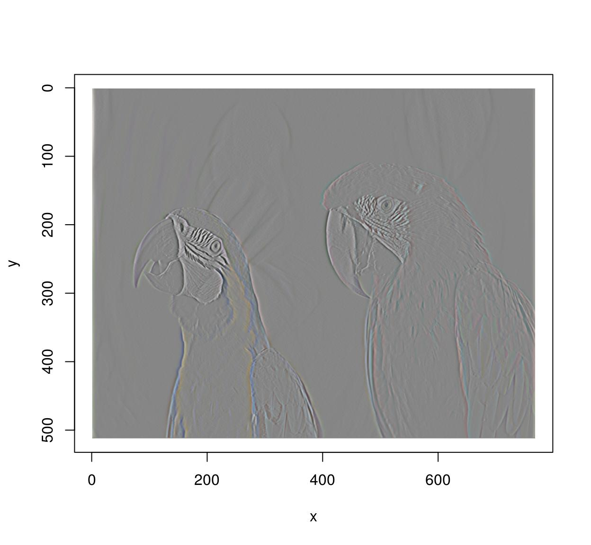
im.yedges <- deriche(im,2,order=2,axis="y") #Edge detector along y-axis
plot(im.yedges)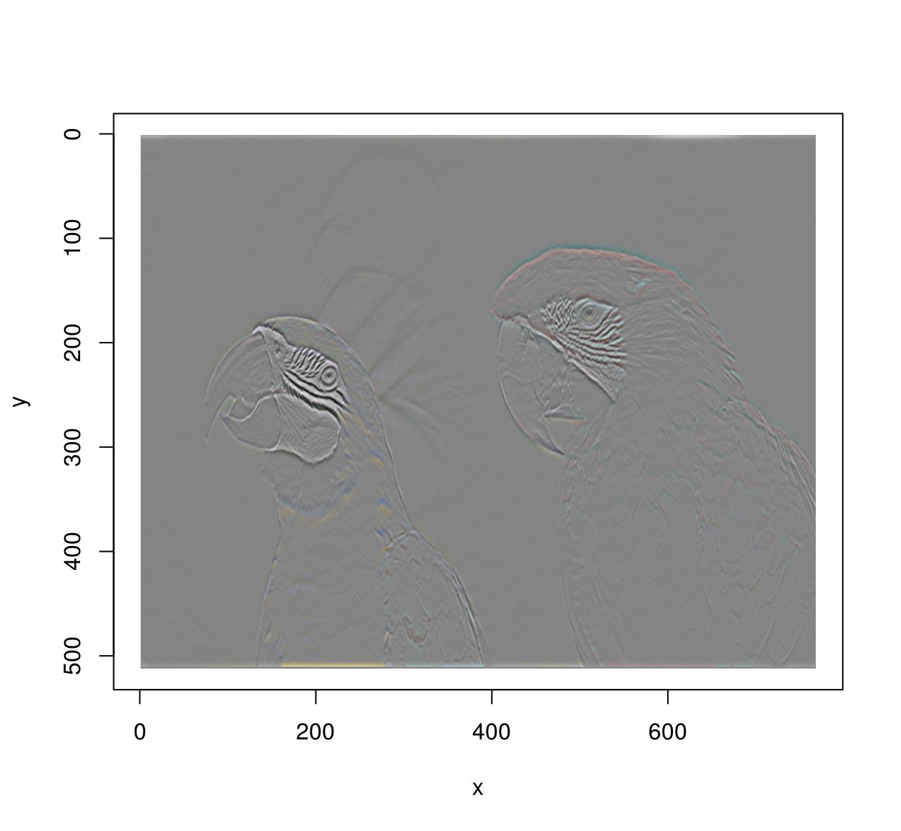
#Chain operations using the pipe operator (from magrittr)
deriche(im,2,order=2,axis="x") %>% deriche(2,order=2,axis="y") %>% plot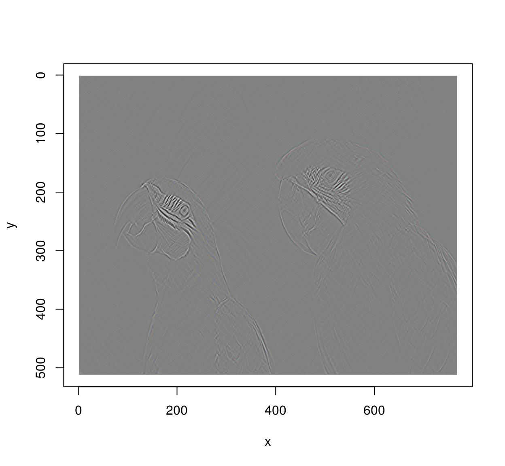
#Another example of chaining: image gradient along x and y axes
layout(matrix(1:2,1,2));
grayscale(im) %>% get_gradient(axes="xy") %>% l_ply(plot)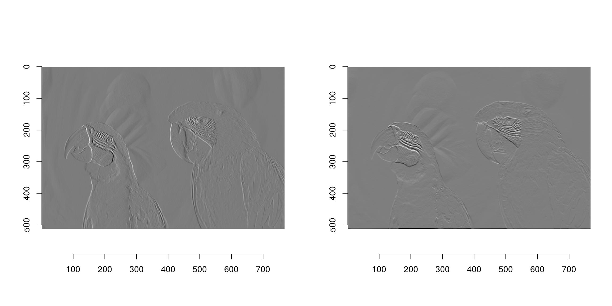
#If ffmpeg is present, we can load videos as well:
tennis <- load.image(system.file('extdata/tennis_sif.mpeg',package='imager'))
plot(tennis,frame=1)
plot(tennis,frame=5)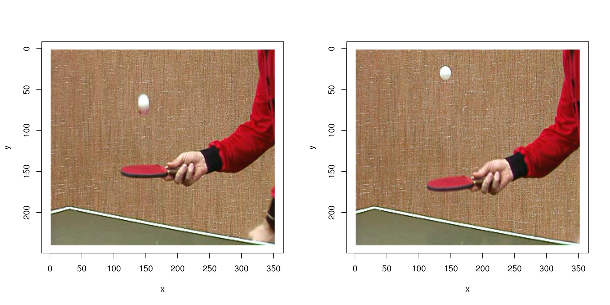
In the next example, we convert the video to grayscale, run a motion detector, and combine both videos to display them side-by-side:
tennis.g <- grayscale(tennis)
motion <- deriche(tennis.g,1,order=1,axis="z")^2 #Differentiate along z axis and square
combined <- list(motion/max(motion),tennis.g/max(tennis.g)) %>% imappend("x") #Paste the two videos togetherIn an interactive session you can run play(combined) to view the results.
Use load.image and save.image. imager supports PNG, JPEG and BMP natively. If you need to access images in other formats you’ll need to install ImageMagick for images, and ffmpeg for videos.
file <- system.file('extdata/parrots.png',package='imager')
parrots <- load.image(file)
#The file format is defined by the extension. Here we save as JPEG
imager::save.image(parrots,"/tmp/parrots.jpeg")
#We call imager::save.image to avoid ambiguity, as base R already has a save.image function You can load files from your hard drive or from a URL. Loading from URLs is useful when scraping web pages, for example. The following piece of code searches for pictures of parrots (using the rvest package), then loads the first one it finds
library(rvest)
#Run a search query (returning html content)
search <- read_html("https://www.google.com/search?site=&tbm=isch&q=parrot")
#Grab all <img> tags, get their "src" attribute, a URL to an image
urls <- search %>% html_nodes("img") %>% html_attr("src") #Get urls of parrot pictures
#Load the first one
load.image(urls[1]) %>% plot()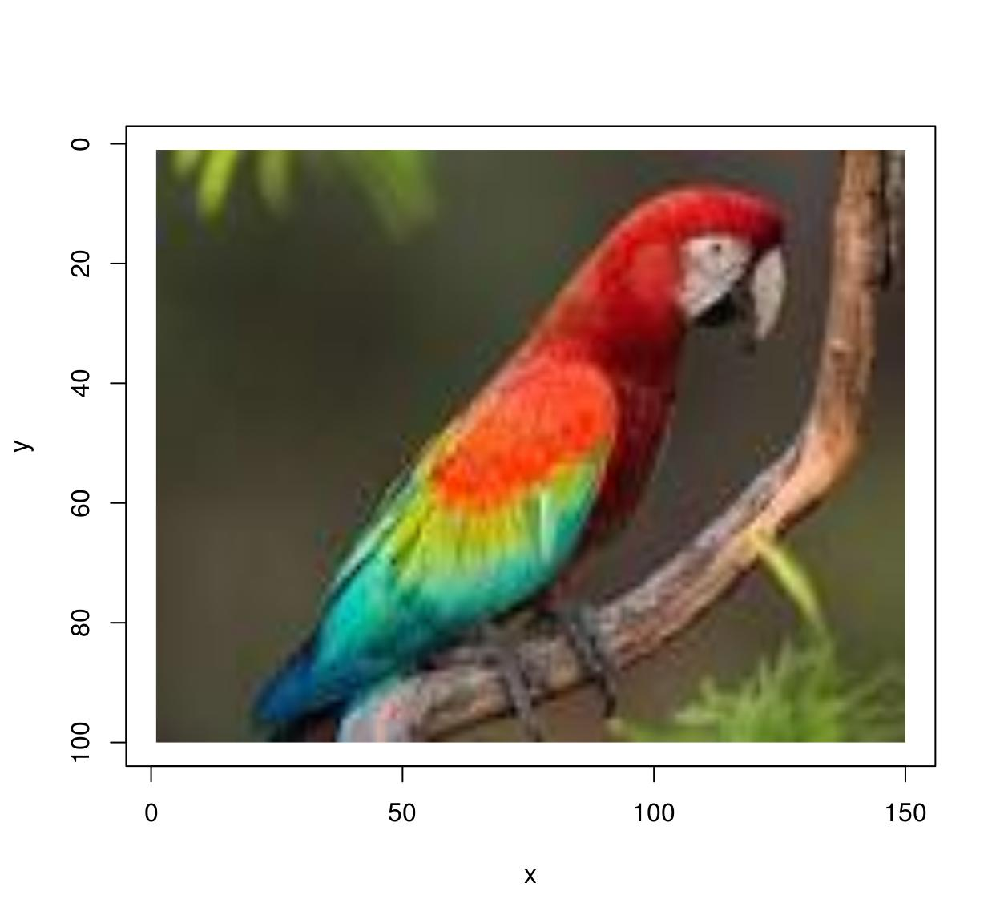
To get a standard R plot use the plot function:
plot(parrots)plot(tennis,frame=1) In addition imager provides display() (for images) and play() (for videos), which are much faster C++ functions for quickly viewing your results. If you’d like to use an external viewer, you can save the image to a temporary file:
tmp <- tempfile(fileext=".png") #Open temp. file
imager::save.image(boats,tmp) #Save image to temp. file
#Call "eog [temp file]" to open in external viewer (Linux only)
paste("eog",tmp) %>% system
#On a mac: try system(paste("open",tmp))
unlink(tmp) #Delete temp. fileImages are represented as 4D numeric arrays, which is consistent with CImg’s storage standard (it is unfortunately inconsistent with other R libraries, like spatstat, but converting between representations is easy). The four dimensions are labelled x,y,z,c. The first two are the usual spatial dimensions, the third one will usually correspond to depth or time, and the fourth one is colour. Remember the order, it will be used consistently in imager. If you only have grayscale images then the two extra dimensions are obviously pointless, but they won’t bother you much. Your objects will still be officially 4 dimensional, with two trailing flat dimensions. Pixels are stored in the following manner: we scan the image beginning at the upper-left corner, along the x axis. Once we hit the end of the scanline, we move to the next line. Once we hit the end of the screen, we move to the next frame (increasing z) and repeat the process. If we have several colour channels, then once we’re done with the first colour channel we move to the next one. All in all the different dimensions are represented in the x,y,z,c order. In R the object is represented as a 4D array. Here’s an example with a grayscale image:
parrots <- load.example('parrots')
gray.parrots <- grayscale(parrots)
dim(gray.parrots)[1] 768 512 1 1and a colour image:
dim(parrots)[1] 768 512 1 3and finally a video, also in colour:
dim(tennis)[1] 352 240 150 3CImg uses standard image coordinates: the origin is at the top left corner, with the x axis pointing right and the y axis pointing down. imager uses the same coordinate system, except the origin is now (1,1) and not (0,0) (the reason being that R indices start at 1 and not at 0). The number of pixels along the x axis is called the width, along the y axis it’s height, along the z axis it’s depth and finally the number of colour channels is called “spectrum”.
width(parrots)[1] 768height(parrots)[1] 512depth(parrots)[1] 1spectrum(parrots)[1] 3Imager uses the “cimg” class for its images. “cimg” is just a regular 4d array with an S3 class tacked on so we can have custom plot, print, etc. To promote an array to a “cimg” object, use as.cimg:
noise <- array(runif(5*5*5*3),c(5,5,5,3)) #5x5 pixels, 5 frames, 3 colours. All noise
noise <- as.cimg(noise)You can treat the object as you would any other array:
#Arithmetic
sin(noise) + 3*noise Image. Width: 5 pix Height: 5 pix Depth: 5 Colour channels: 3 #Subsetting
noise[,,,1] #First colour channel, , 1
[,1] [,2] [,3] [,4] [,5]
[1,] 0.3510337 0.76994033 0.1585224 0.85659146 0.345474361
[2,] 0.8456644 0.01383741 0.9971350 0.69984376 0.388089864
[3,] 0.3275034 0.89027737 0.6519898 0.54386820 0.907249955
[4,] 0.3949027 0.03133751 0.3398497 0.21482575 0.006593775
[5,] 0.2303667 0.42780621 0.7485127 0.06081203 0.419723301
, , 2
[,1] [,2] [,3] [,4] [,5]
[1,] 0.9190668 0.8040562 0.2477229 0.18348958 0.3005642
[2,] 0.7214234 0.9532363 0.4843048 0.80618905 0.7443933
[3,] 0.3884877 0.4896235 0.1195527 0.09582635 0.3718278
[4,] 0.6626700 0.3609153 0.1333640 0.64431858 0.9894917
[5,] 0.7536416 0.4578405 0.9426645 0.03182711 0.3771937
, , 3
[,1] [,2] [,3] [,4] [,5]
[1,] 0.06709956 0.994025144 0.5526753 0.2698329 0.5989443
[2,] 0.69054710 0.698176055 0.7654785 0.8453901 0.1252817
[3,] 0.64665840 0.007431889 0.1556904 0.6569562 0.5875018
[4,] 0.02632171 0.538871856 0.5511799 0.6785020 0.7733848
[5,] 0.58920388 0.856742959 0.6064965 0.7258797 0.3654295
, , 4
[,1] [,2] [,3] [,4] [,5]
[1,] 0.2001784 0.9162113 0.6247090 0.07353605 0.01083378
[2,] 0.3194382 0.7227267 0.6255889 0.79507656 0.20019494
[3,] 0.8530176 0.8208716 0.6750365 0.98036421 0.79974117
[4,] 0.5475812 0.5518732 0.8364710 0.57146296 0.05832274
[5,] 0.1842463 0.4753840 0.5273422 0.78843016 0.05364201
, , 5
[,1] [,2] [,3] [,4] [,5]
[1,] 0.4514860 0.1975269 0.8431716 0.62626085 0.26102108
[2,] 0.2873308 0.9433144 0.9796437 0.55679229 0.10640043
[3,] 0.1747636 0.9531210 0.9684121 0.06136671 0.07005774
[4,] 0.4573823 0.6753696 0.0684578 0.28194490 0.34898283
[5,] 0.6432527 0.4418153 0.2459070 0.97942470 0.91352755dim(noise[1:4,,,] )[1] 4 5 5 3which makes life easier if you want to use ggplot2 for plotting (see tutorial).
You can also convert matrices to cimg objects:
matrix(1,10,10) %>% as.cimgImage. Width: 10 pix Height: 10 pix Depth: 1 Colour channels: 1 and vectors:
1:9 %>% as.cimgImage. Width: 3 pix Height: 3 pix Depth: 1 Colour channels: 1 which tries to guess what sort of image dimensions you want (see tutorial).
The reverse is possible as well: if you have a data.frame with columns x,y,z,cc,value, you can turn it into a cimg object:
df <- expand.grid(x=1:10,y=1:10,z=1,cc=1)
mutate(df,value=cos(sin(x+y)^2)) %>% as.cimgImage. Width: 10 pix Height: 10 pix Depth: 1 Colour channels: 1 By default as.cimg.data.frame will try to guess image size from the input. You can also be specific by setting the “dims” argument explicitly:
mutate(df,value=cos(sin(x+y)^2)) %>% as.cimg(dims=c(10,10,1,1))Image. Width: 10 pix Height: 10 pix Depth: 1 Colour channels: 1 The reverse is possible as well: you can convert a cimg object to a data.frame
head(as.data.frame(parrots)) x y cc value
1 1 1 1 0.4549020
2 2 1 1 0.4588235
3 3 1 1 0.4705882
4 4 1 1 0.4666667
5 5 1 1 0.4705882
6 6 1 1 0.4705882or to an array, vector or matrix
head(as.array(parrots))[1] 0.4549020 0.4588235 0.4705882 0.4666667 0.4705882 0.4705882head(as.vector(parrots))[1] 0.4549020 0.4588235 0.4705882 0.4666667 0.4705882 0.4705882grayscale(parrots) %>% as.matrix %>% dim[1] 768 512Many functions in imager produce lists of image as output (see below). These are given the “imlist” class, e.g. imgradient returns:
imgradient(parrots,"xy") %>% class[1] "imlist" "list" The imlist class comes with a few convenience functions, for example:
imgradient(parrots,"xy") %>% plot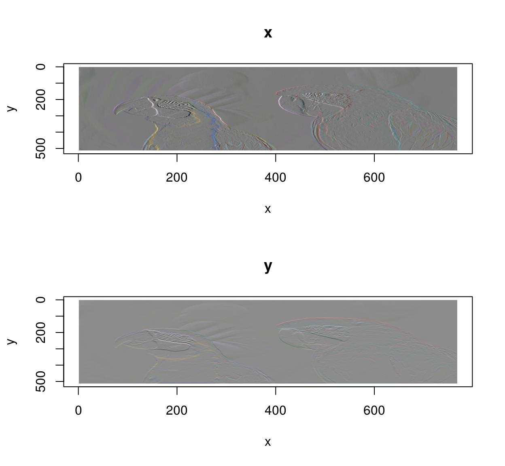
and:
imgradient(parrots,"xy") %>% as.data.frame %>% head im x y cc value
1 x 1 1 1 0.001386484
2 x 2 1 1 0.006120236
3 x 3 1 1 0.002198667
4 x 4 1 1 -0.001722901
5 x 5 1 1 0.002535085
6 x 6 1 1 -0.001287949where the “im” column indexes the image in the list.
To make an image list from a list, use “imlist”
list(a=parrots,b=3*parrots) %>% imlistImage list of size 2 One often needs to perform separate computations on each channel of an image, or on each frame, each line, etc. This can be achieved using a loop or more conveniently using imsplit:
imsplit(parrots,"c") #A list with three elements corresponding to the three channelsImage list of size 3 imsplit(parrots,"c") %>% laply(mean) #Mean pixel value in each channel[1] 0.4771064 0.4297881 0.2972314imsplit(parrots,"x") %>% laply(mean) %>% head #Mean pixel value in each line (across all channels)[1] 0.3666948 0.3682700 0.3697508 0.3705525 0.3707925 0.3708410imsplit contains an additional argument, called “nb”. When “nb” is positive imsplit cuts the image into “nb” chunks, along the axis “axis”:
imsplit(parrots,"x",4) %>% plot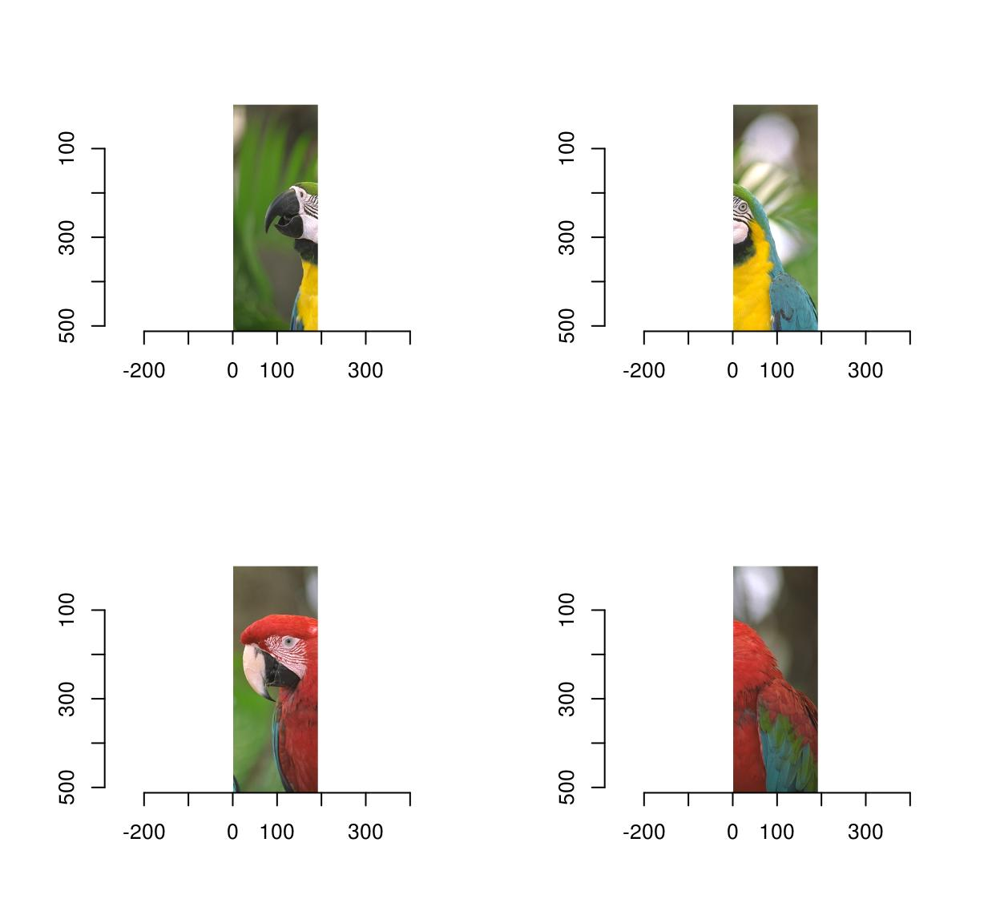
imsplit(parrots,"y",3) %>% plot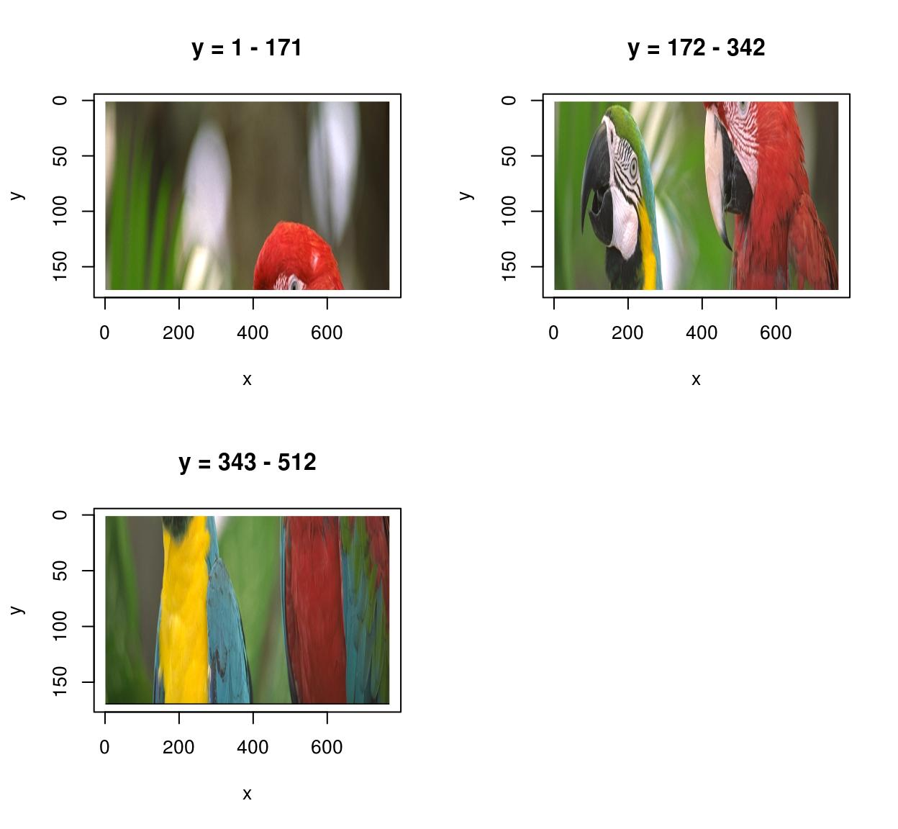
When “nb” is negative, “nb” pixels defines the chunk size:
imsplit(parrots,"x",-250) %>% plot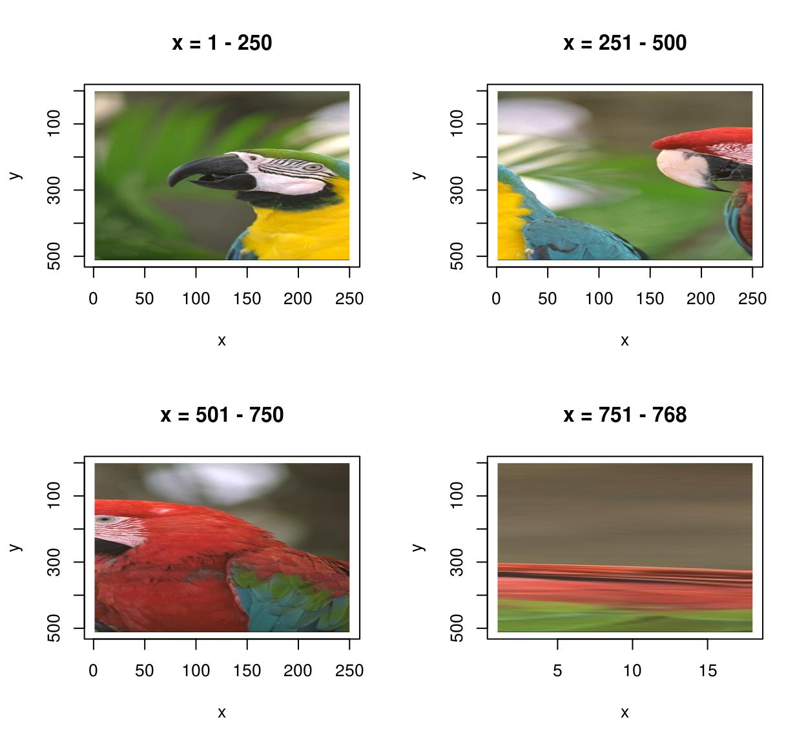
That last panel looks crummy because it’s a long-and-thin image stretched into a square.
The inverse operation to imsplit is called imappend: it takes a list of images and concatenates them along the dimension of your choice.
#Sample functions and turn them into separate R,G,B channels
R <- as.cimg(function(x,y) sin(cos(3*x*y)),100,100)
G <- as.cimg(function(x,y) sin(cos(3*x*y + pi/2)),100,100)
B <- as.cimg(function(x,y) exp(-.03*x),100,100)
trippy <- imappend(list(R,G,B),"c") #Bind the three channels into one image
plot(trippy)Often what one wants to do is to split the image along a certain axis (e.g. colour), apply a transformation separately and recombine the result. iiply does that:
iiply(parrots,"c",function(v) v/max(v)) %>% plot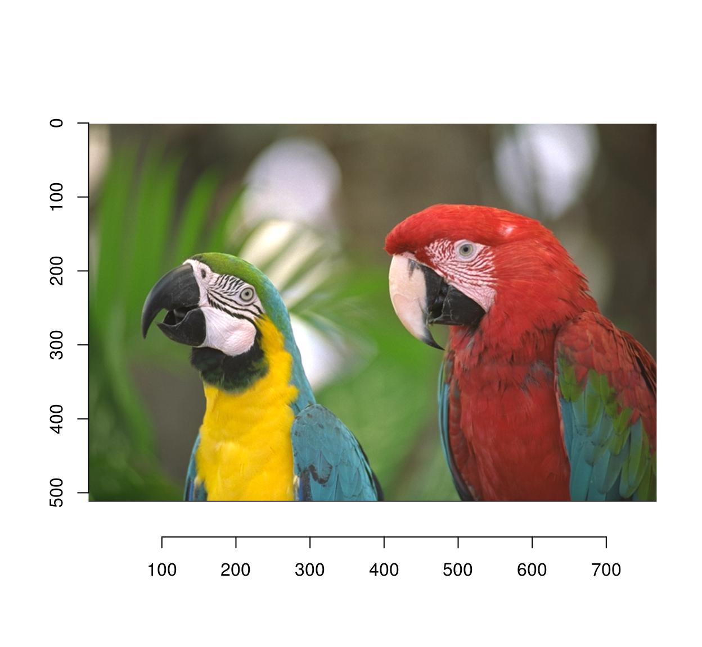
#Same thing but longer:
#imsplit(parrots,"c") %>% llply(function(v) v/max(v) %>% imappend("c") %>% plotThe code above separates colour channels, applies a normalisation and recombines the result into an image. Following the same convention used by plyr, imager also defines ilply (which splits, applies and returns a list), idply (which splits, applies and returns a data.frame) and liply (which applies, combines and returns an image).
Another way to combine after a split is to take the mean result, or a product, etc (the same way layers are combined in an image editing program). You can do this using shortcuts defined by imager:
imsplit(parrots,"c") %>% add %>% plot(main="Adding colour channels")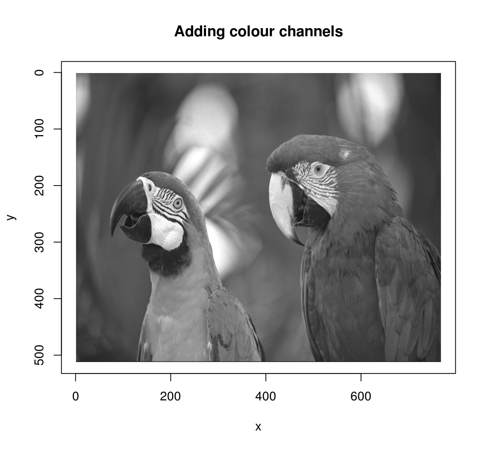
#Use different levels of blur on the same image
blur.layers <- llply(seq(1,15,l=5),function(v) isoblur(parrots,v))
blur.layers %>% parmin %>% plot(main="Min across blur levels")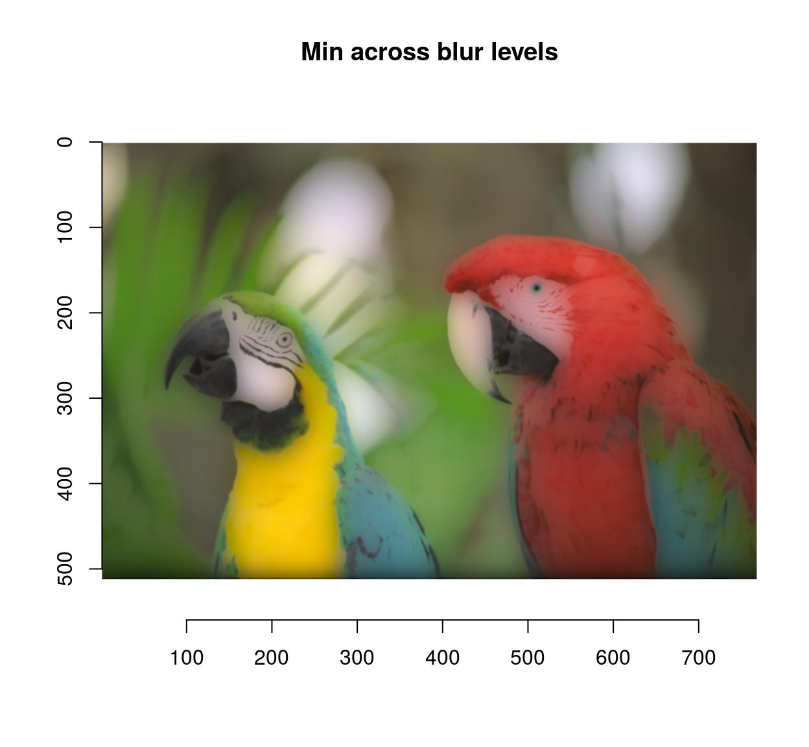
blur.layers %>% parmax %>% plot(main="Max across blur levels")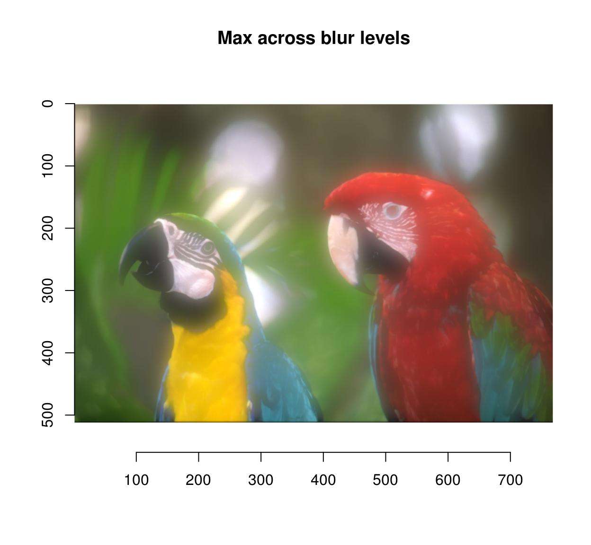
blur.layers %>% average %>% plot(main="Average across blur levels")If you need to select a part of an image, you can use imsub, which is best explained by example:
imsub(parrots,x < 30) #Only the first 30 rowsImage. Width: 29 pix Height: 512 pix Depth: 1 Colour channels: 3 imsub(parrots,y < 30) #Only the first 30 rowsImage. Width: 768 pix Height: 29 pix Depth: 1 Colour channels: 3 imsub(parrots,x < 30,y < 30) #First 30 columns and rowsImage. Width: 29 pix Height: 29 pix Depth: 1 Colour channels: 3 imsub(parrots, sqrt(x) > 8) #Can use arbitrary expressionsImage. Width: 704 pix Height: 512 pix Depth: 1 Colour channels: 3 imsub(parrots,x > height/2,y > width/2) #height and width are defined based on the imageImage. Width: 512 pix Height: 128 pix Depth: 1 Colour channels: 3 imsub(parrots,cc==1) #Colour axis is "cc" not "c" here because "c" is an important R functionImage. Width: 768 pix Height: 512 pix Depth: 1 Colour channels: 1 Pixel neighbourhoods (for example, all nearest neighbours of pixel (x,y,z)) can be selected using stencils. See ?get.stencil and the vignette on natural image statistics for more.
If you need to access a specific colour channel, use any of the following:
R(parrots) Image. Width: 768 pix Height: 512 pix Depth: 1 Colour channels: 1 G(parrots)Image. Width: 768 pix Height: 512 pix Depth: 1 Colour channels: 1 B(parrots)Image. Width: 768 pix Height: 512 pix Depth: 1 Colour channels: 1 #R(parrots) is equivalent to channel(parrots,1)
#Set all channels to 0 except red
parrots.cp <- load.example("parrots")
G(parrots.cp) <- 0
B(parrots.cp) <- 0
plot(parrots.cp)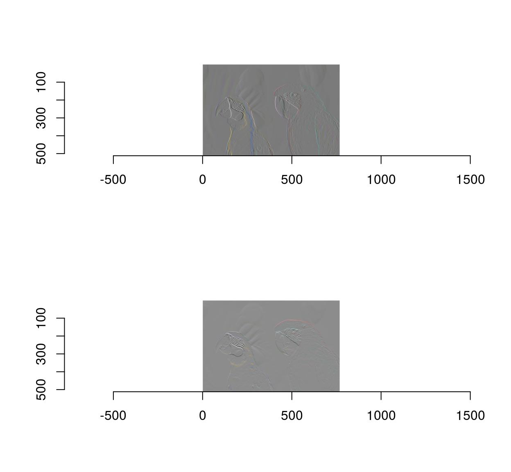
If you need to access a specific frame, use frame:
frame(tennis,1)Image. Width: 352 pix Height: 240 pix Depth: 1 Colour channels: 3 #Blur frame 1
frame(tennis,1) <- isoblur(frame(tennis,1),10)If you need pixel values along rows and columns use:
imrow(R(parrots),10) %>% plot(main="Red channel along 10th row",type="l")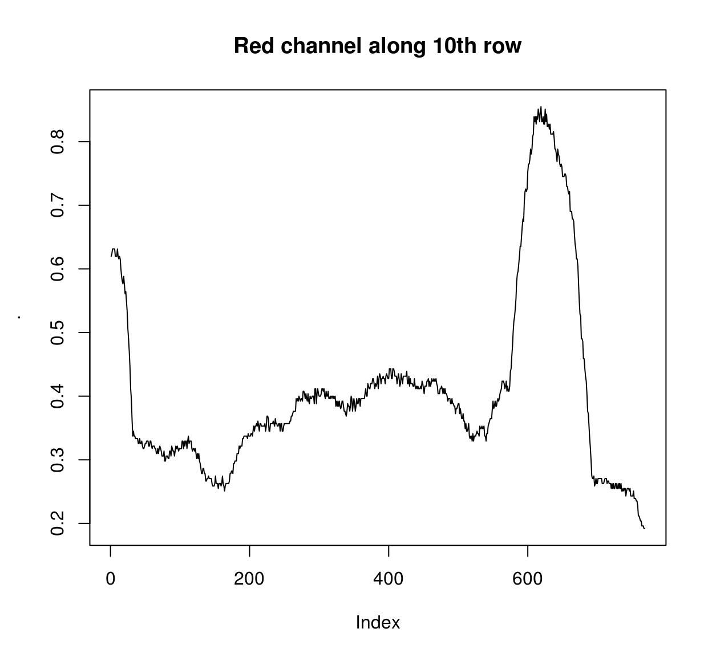
imcol(B(parrots),10) %>% plot(main="Blue channel along 10th line",type="l")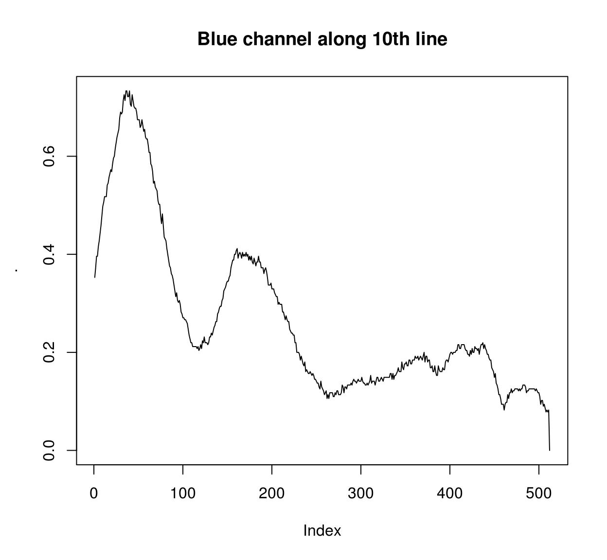
Individual pixels can be accessed using at and color.at:
at(parrots,x=20,y=20,cc=1:3)[1] 0.6313725 0.5882353 0.4941176color.at(parrots,x=20,y=20)[1] 0.6313725 0.5882353 0.4941176Finally all of this is available under the familiar form of the array subset operator, which tries to save you some typing by filling in flat dimensions:
im <- imfill(4,4)
dim(im) #4 dimensional, but the last two dimensions are singletons[1] 4 4 1 1im[,1,,] <- 1:4 #Assignment the standard way
im[,1] <- 1:4 #ShortcutDenoising can be performed using basic filters that average over space:
birds <- load.image(system.file('extdata/Leonardo_Birds.jpg',package='imager'))
birds.noisy <- (birds + 80*rnorm(prod(dim(birds))))
layout(t(1:2))
plot(birds.noisy,main="Original")
isoblur(birds.noisy,5) %>% plot(main="Blurred")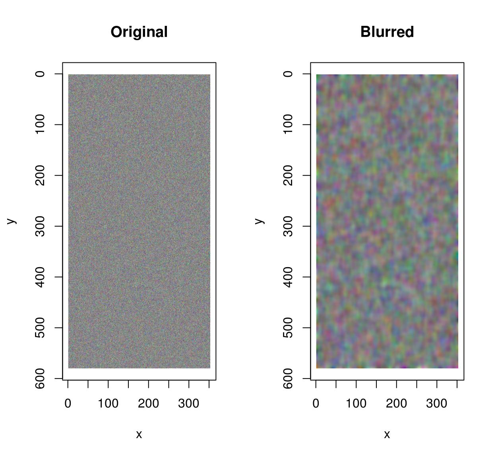
Blurring removes some of the noise but also blurs away the contours. CImg provides an anisotropic blur that does not have that problem:
layout(t(1:2))
plot(birds.noisy,main="Original")
blur_anisotropic(birds.noisy,ampl=1e5,sharp=1) %>% plot(main="Blurred (anisotropic)")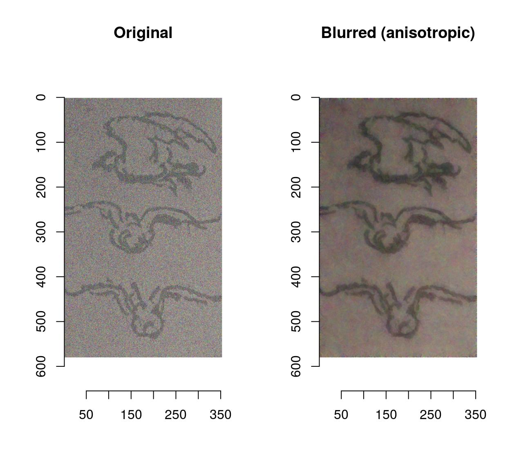
To convert from RGB to HSL/HSV/HSI/YUV/YCbCR, run RGBto[…], as in the following example:
parrots.hsl <- RGBtoHSL(parrots)
chan <- channels(parrots.hsl) #Extract the channels as a list of images
names(chan) <- c("H","S","L")
#Plot
layout(matrix(1:3,1,3))
l_ply(names(chan),function(nm) plot(chan[[nm]],main=nm))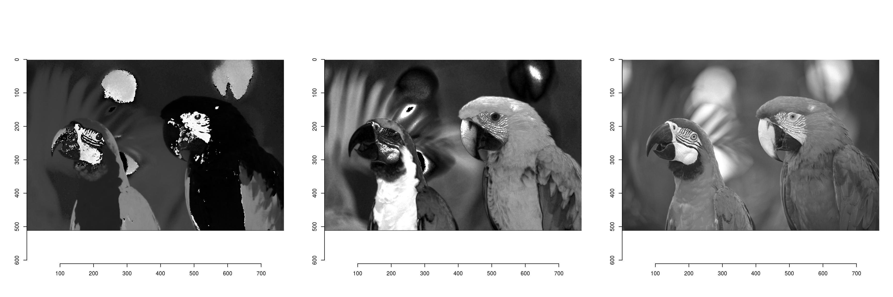
The reverse operation is done by running […]toRGB. Note that all display functions assume that your image is in RGB.
YUVtoRGB(trippy) %>% plot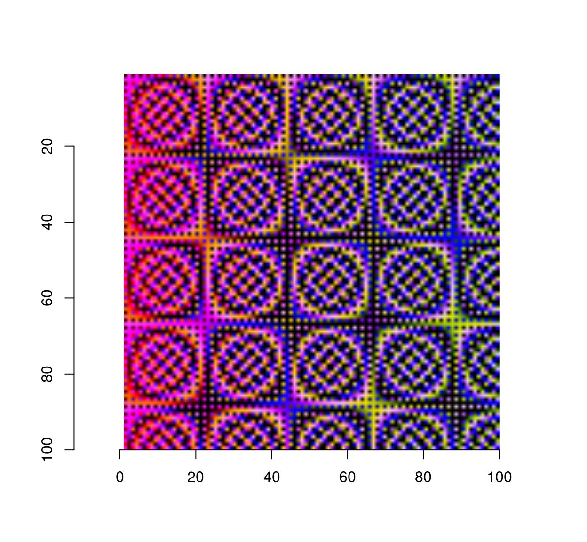
If you have a colour image, you convert it to grayscale using the grayscale function. If you have a grayscale image, add colour channels using add.colour:
grayscale(parrots) %>% spectrum[1] 1#Image has only one channel (luminance)
grayscale(parrots) %>% add.colour %>% spectrum[1] 3#Image is still in gray tones but has R,G,B channels Functions for resizing and rotation should be fairly intuitive:
thmb <- resize(parrots,round(width(parrots)/10),round(height(parrots)/10))
plot(thmb,main="Thumbnail") #Pixellated parrots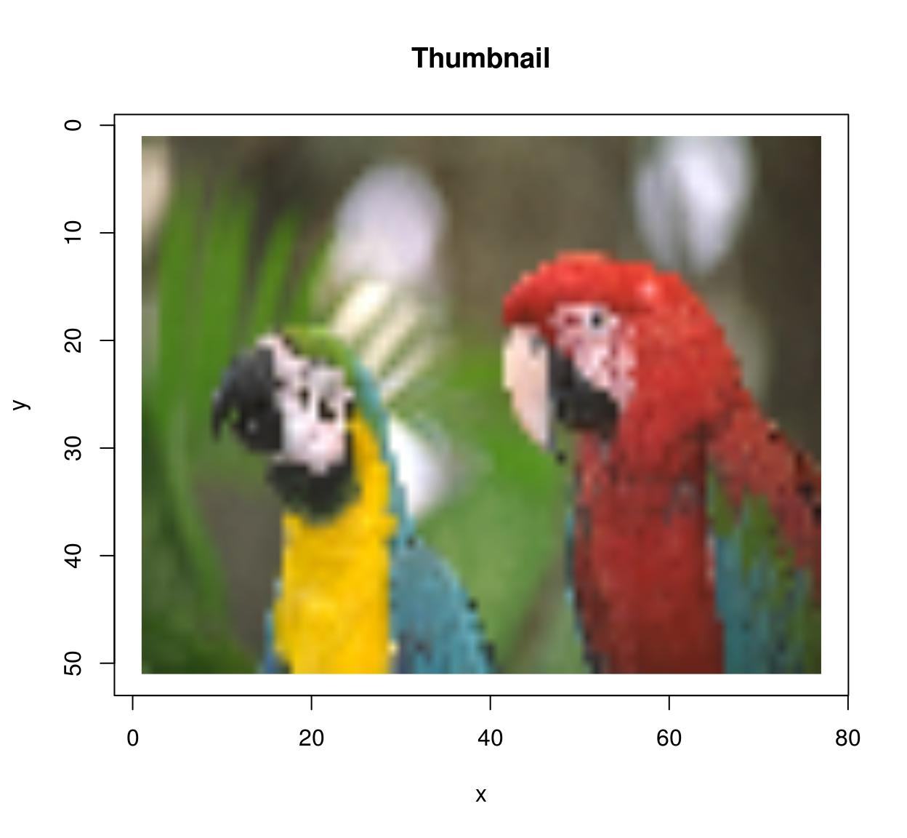
#Same as above: negative arguments are interpreted as percentages
thmb <- resize(parrots,-10,-10)
imrotate(parrots,30) %>% plot(main="Rotating")imshift(parrots,40,20) %>% plot(main="Shifting")imshift(parrots,100,100,boundary=1) %>% plot(main="Shifting (Neumann boundaries)")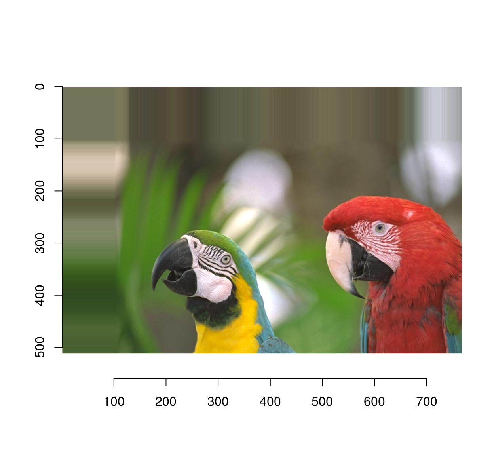
imshift(parrots,100,100,boundary=2) %>% plot(main="Shifting (circular)")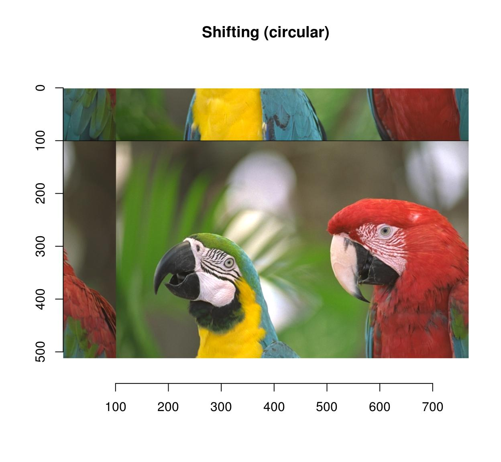
You can pad an image using “pad”:
pad(parrots,axes="y",140) %>% plot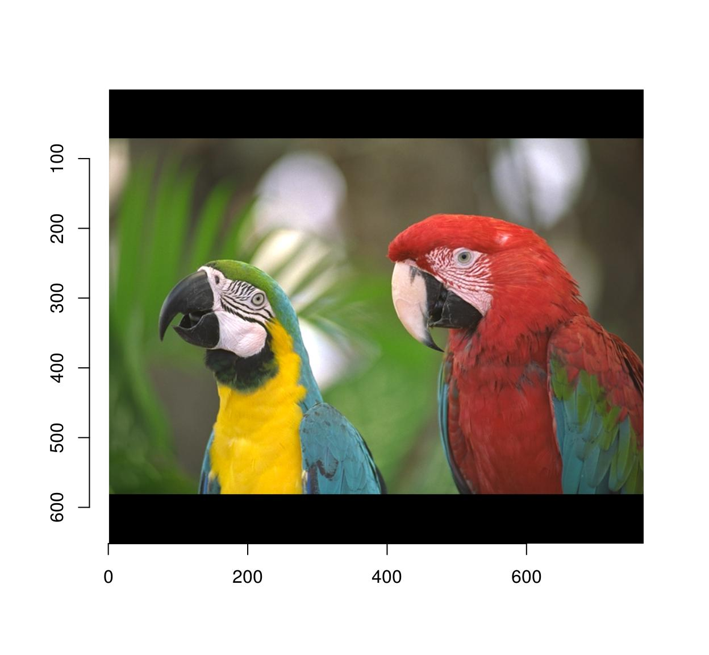
pad(parrots,axes="y",140,pos=-1) %>% plotautocrop will remove any extra padding:
#The argument to autocrop is the colour of the background it needs to remove
pad(parrots,axes="y",140,pos=-1) %>% autocrop(c(0,0,0)) %>% plotWarping maps the pixels of the input image to a different location in the output. Scaling is a special case of warping, so is shifting. Warping relies on a map: \(M(x,y) = (x',y')\)
that describes where to send pixel (x,y). Shifting the image corresponds to adding a constant to the coordinates: \(M(x,y) = (x+\delta_x,y+\delta_y)\)
In imager:
map.shift <- function(x,y) list(x=x+10,y=y+30)
imwarp(parrots,map=map.shift) %>% plot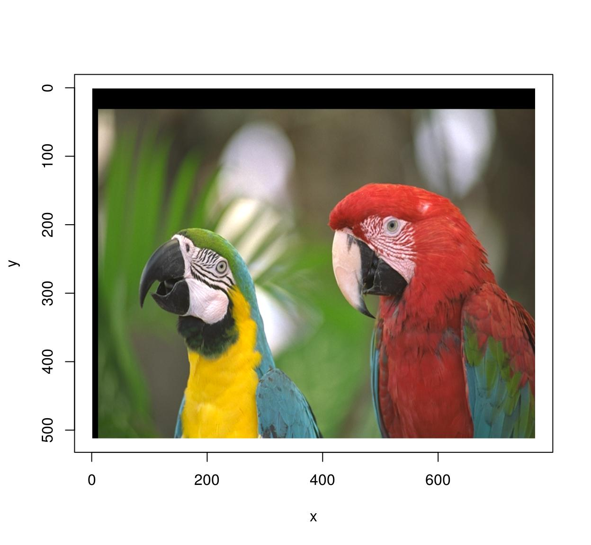
The map function should take (x,y) as arguments and output a named list with values (x,y).
The warping algorithm has two modes, “forward” and “backward”. In forward mode you go through all \((x,y)\) pixels in the source, and paint the corresponding location \(M(x,y)\) in the target image. This may result in unpainted pixels, as in the following example:
map.scale <- function(x,y) list(x=1.5*x,y=1.5*y)
imwarp(parrots,map=map.scale) %>% plot(main="Forward mode")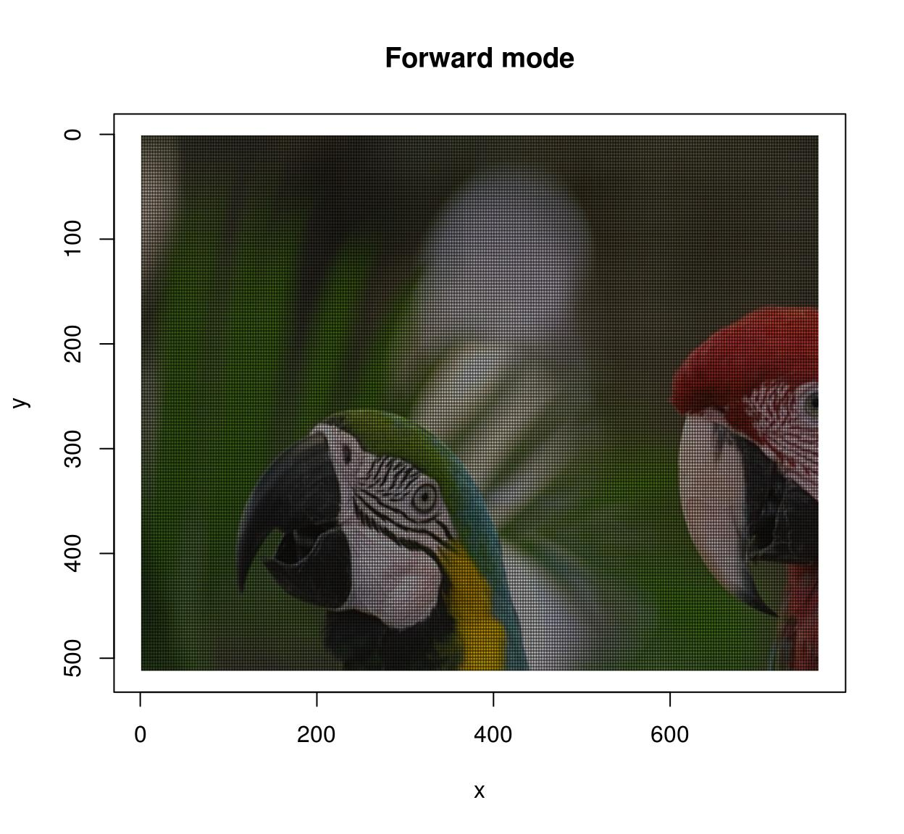
In backward mode you go through all pixels \((x',y')\) in the target image, and look up their ancestor \(M^{-1}(x',y')\) in the source image. Backward mode has no missing pixel problems, but now you need to define the inverse map and set the “direction” argument to “backward”.
map.scale.bw <- function(x,y) list(x=x/1.5,y=y/1.5)
imwarp(parrots,map=map.scale.bw,direction="backward") %>% plot(main="Backward mode")Of course shifting and scaling things is boring and the whole point of warping is to do things like that:
map <- function(x,y) list(x=exp(y/600)*x,y=y*exp(-sin(x/40)))
imwarp(parrots,map=map,direction="forward") %>% plot()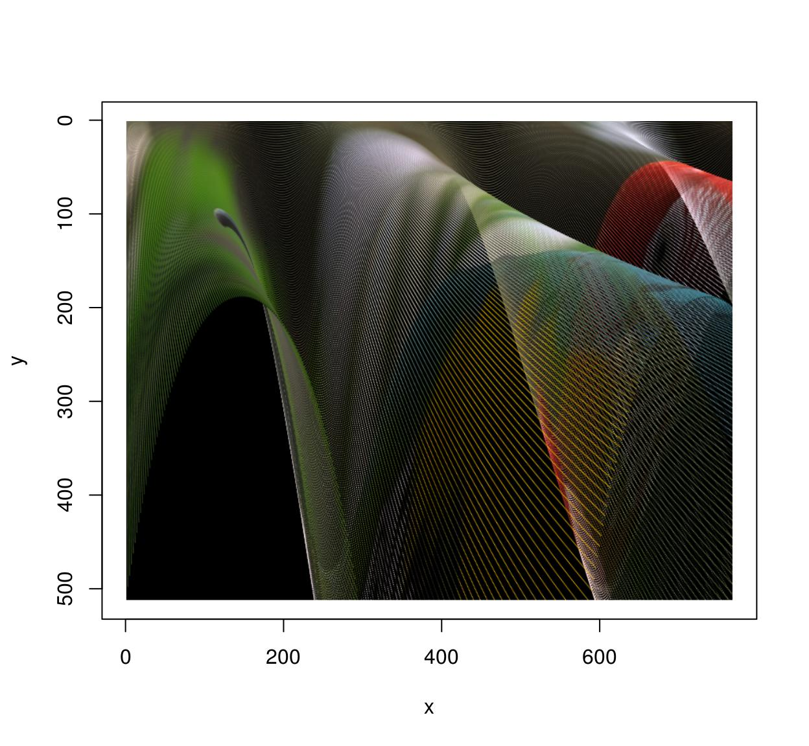
See ?imwarp for more. Note that 3D warping is possible as well.
To compute the difference between successive images in a video, you can use the shift operator:
#Compute difference between two successive frames (at lag 1)
(imshift(tennis,delta_z=1)-tennis) %>% plot(frame=2,main="Difference betw. frames 2 and 1")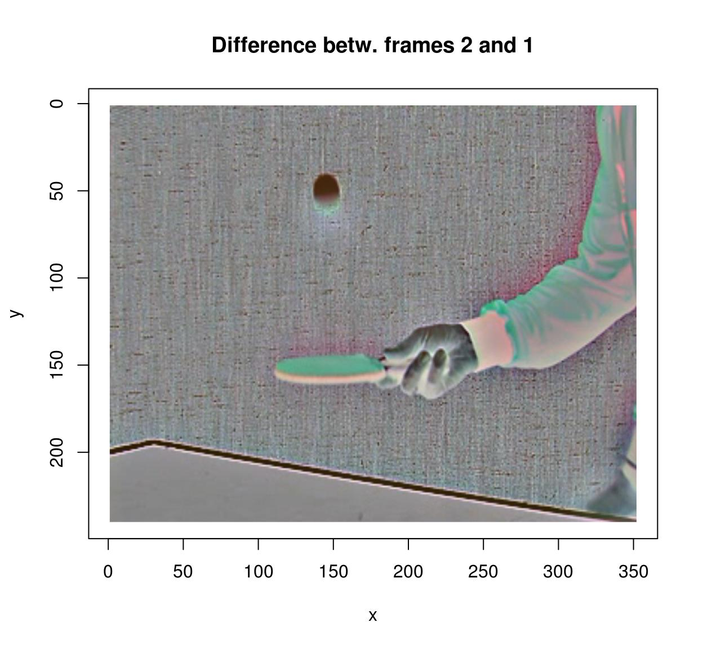
#Compute difference between frames (at lag 3)
(imshift(tennis,delta_z=3)-tennis) %>% plot(frame=4,main="Difference between frames 3 and 1")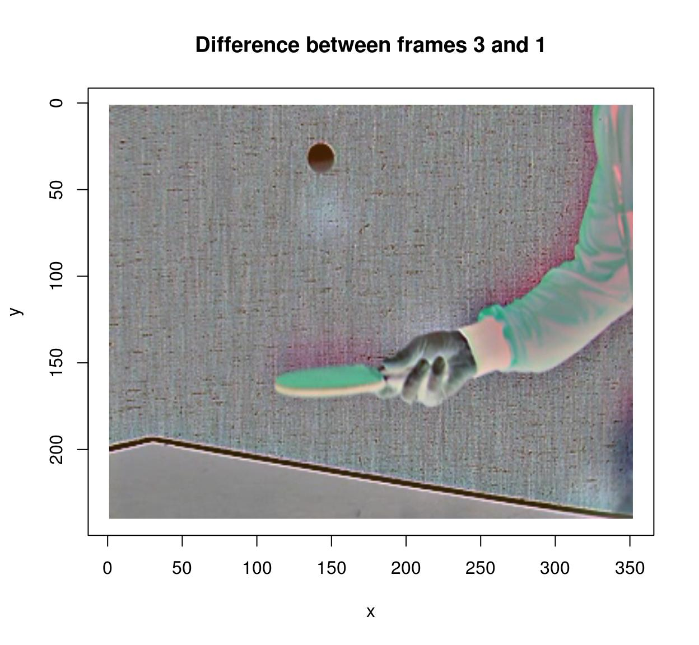
#note that shift uses interpolation. that makes it relatively slow, but one advantage is that it allows non-integer lags:
#shift(tennis,delta_z=3.5)-tennis
#is validimager has the usual correlate and convolve operations:
flt <- as.cimg(matrix(1,4,4)) #4x4 box filter
grayscale(parrots) %>% correlate(flt) %>% plot(main="Filtering with box filter")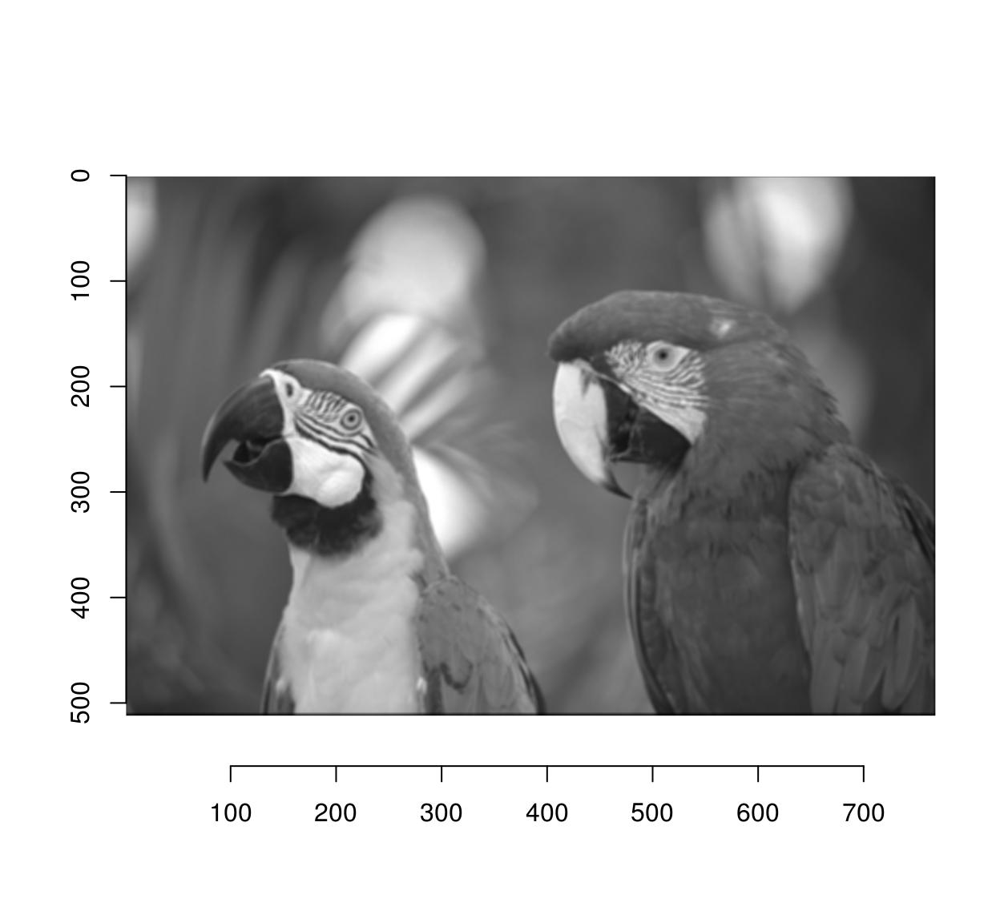
#Here the filter is symmetrical so convolution and correlation should be the same. Check:
a <- grayscale(parrots) %>% correlate(flt)
b <- grayscale(parrots) %>% imager::convolve(flt)
all.equal(a,b)[1] TRUECImg includes fast implementations of Gaussian (and derivative-of-Gaussian) filters. They are available via the “deriche” and “vanvliet” functions.
im <- grayscale(parrots)
layout(t(1:2))
deriche(im,sigma=4,order=2,axis="y") %>% plot(main="2nd deriv of Gaussian along y")
vanvliet(im,sigma=4,order=2,axis="y") %>% plot(main="2nd deriv of Gaussian along y")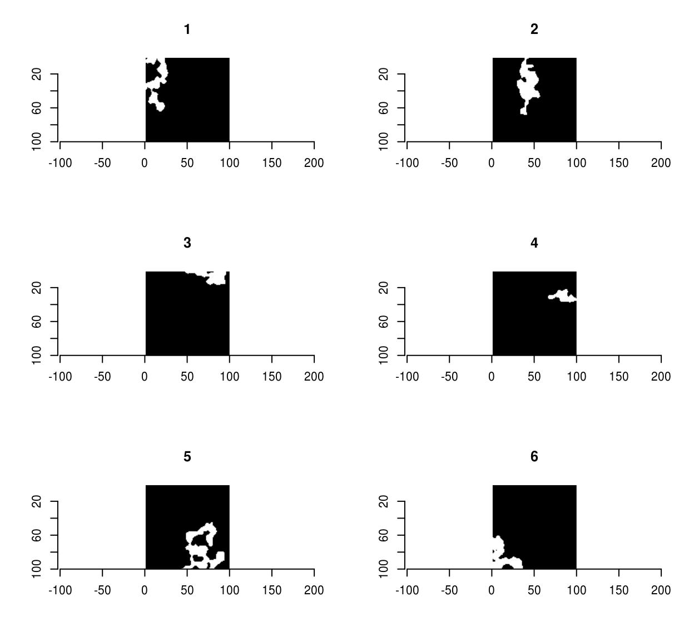
The Vanvliet-Young filter is typically a better approximation. We can establish this by looking at the impulse response (which should be Gaussian). Here’s the one-dimensional case:
n <- 1e3
xv <- seq(0,1,l=n) #1D Grid
imp <- imdirac(c(n,1,1,1),n/2,1) #1D signal: Impulse at x = n/2
sig <- 80
#impulse response of the Deriche filter
imp.dr <- deriche(imp,sigma=sig) %>% as.vector
#impulse response of the Vanvliet-Young filter
imp.vv <- vanvliet(imp,sigma=sig) %>% as.vector
imp.true <- dnorm(xv,sd=sig/n,m=.5) #True impulse response
plot(xv,imp.true/max(imp.true),type="l",lwd=2,xlab="x",ylab="Impulse response")
lines(xv,imp.vv/max(imp.vv),col="blue",lwd=2)
lines(xv,imp.dr/max(imp.dr),col="red",lwd=2)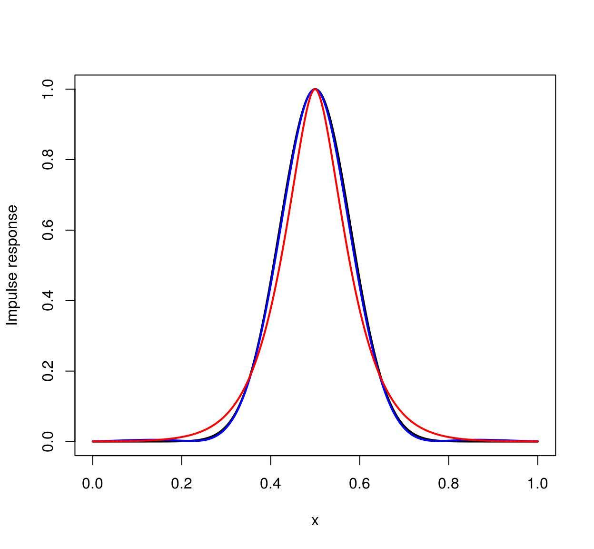
The ideal filter is in black, the Vanvliet-Young filter in blue, the Deriche filter in red. Vanvliet-Young is clearly more accurate, but slightly slower:
im <- imfill(3e3,3e3)
system.time(deriche(im,3)) user system elapsed
0.125 0.067 0.115 system.time(vanvliet(im,3)) user system elapsed
0.289 0.160 0.260 In both cases computation time is independent of filter bandwidth, which is a very nice feature (the filters are IIR).
FFTs can be computed via the FFT function:
im <- as.cimg(function(x,y) sin(x/5)+cos(x/4)*sin(y/2),128,128)
ff <- FFT(im)
plot(ff$real,main="Real part of the transform")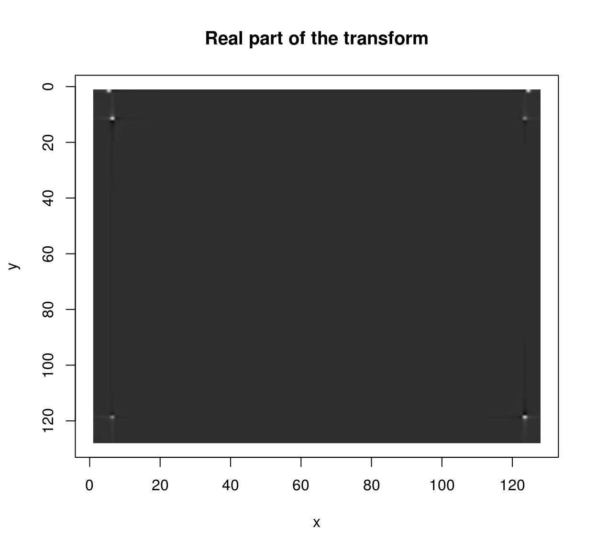
plot(ff$imag,main="Imaginary part of the transform")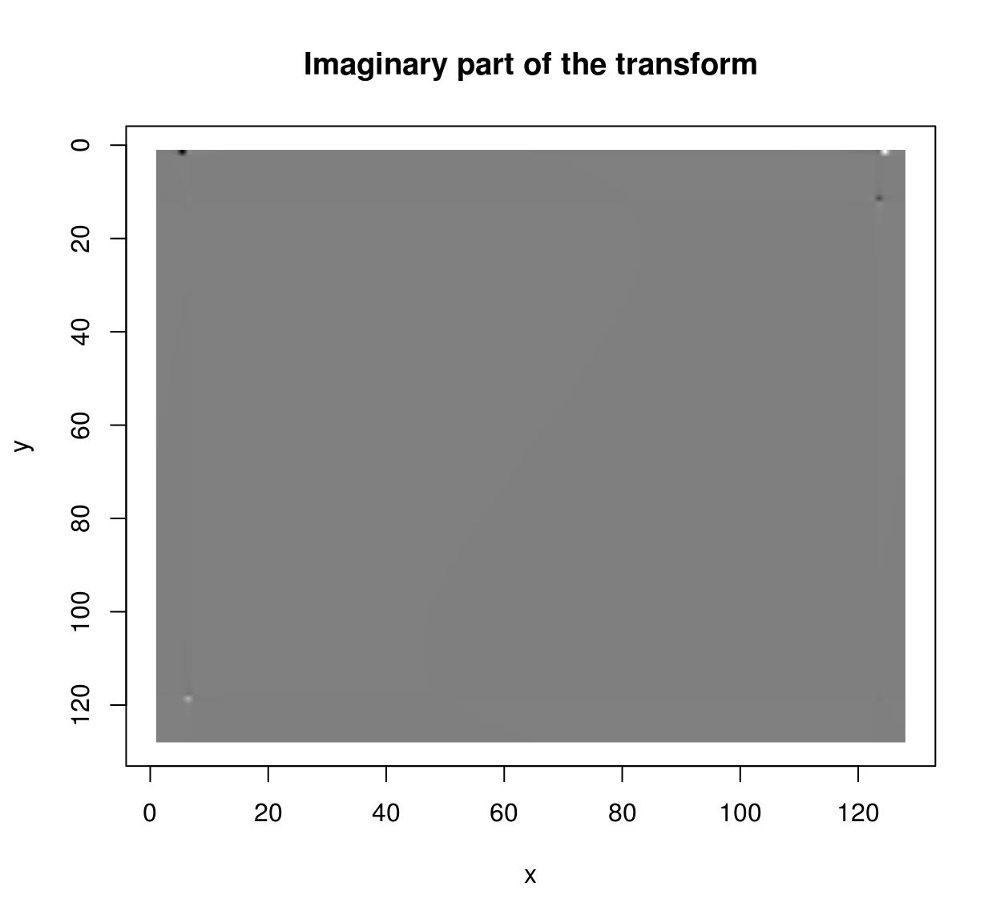
sqrt(ff$real^2+ff$imag^2) %>% plot(main="Power spectrum")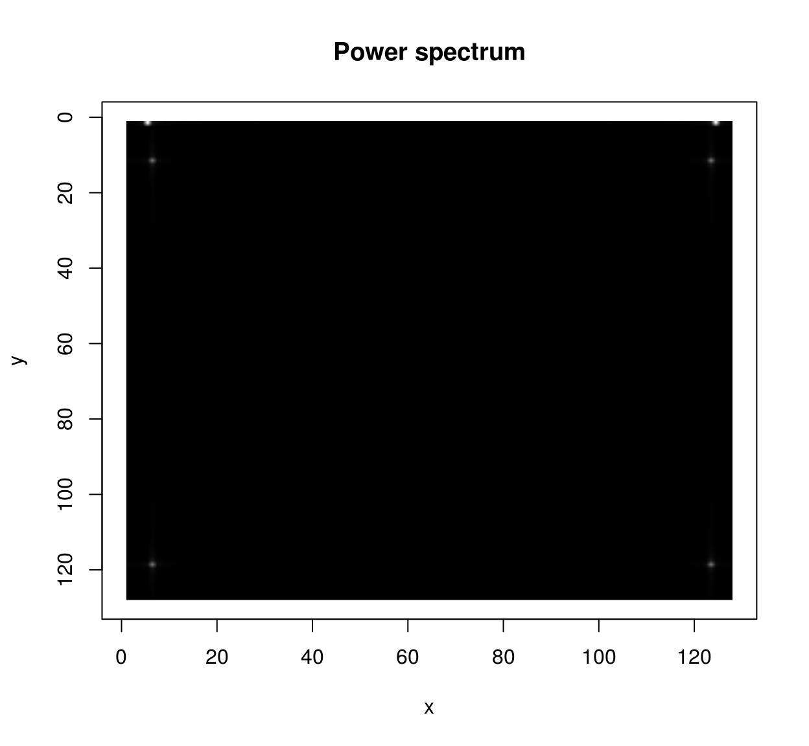
If you want to use CImg’s FFT on images of arbitrary size you should enable FFTW3 support. Install FFTW3 on your system, then run install_github(“dahtah/imager”,ref=“fftw”). As a workaround you can also use R’s native fft:
rff <- as.matrix(im) %>% fft
Re(rff) %>% as.cimg %>% plot(main="Real part of the transform (R's native code)")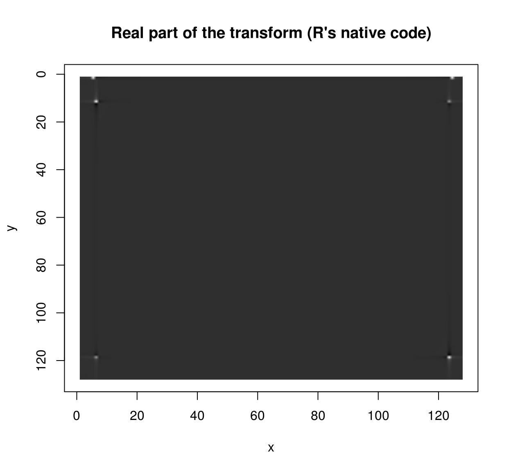
Important: both FFT and fft will attempt to perform a multi-dimensional FFT of the input, with dimensionality defined by the dimensionality of the array. If you want to compute a 2D FFT for every frame of a video, use a split (imsplit or ilply).
The FFT works best for periodic signals. One way of making signals periodic is via zero-padding (use the pad function), another is to use the periodic-smooth decomposition of Moisan (2011):
layout(t(1:2))
periodic.part(parrots) %>% plot(main="Periodic part of parrots")
(parrots- periodic.part(parrots)) %>% plot(main="Smooth residual of parrots")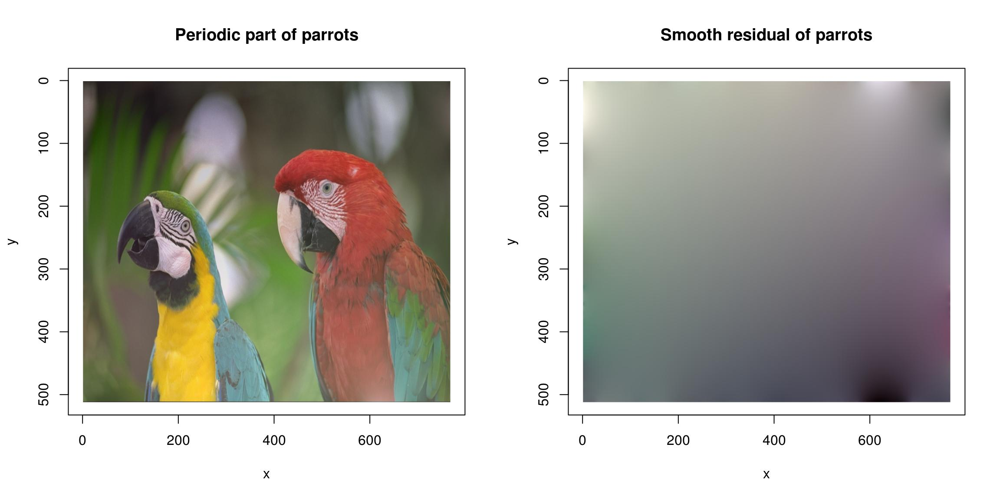
See ?periodic.smooth for details.
The following functions are available:
For image segmentation the following functions will be useful:
See the vignette on morphology.